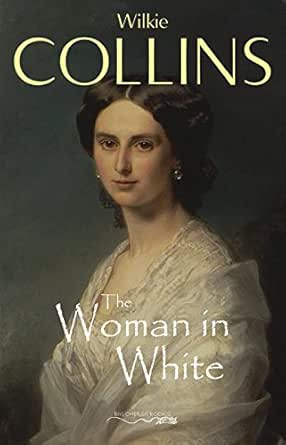
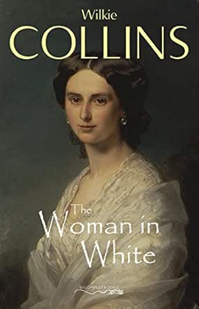

The Woman in White Review
By Omar Andre
By Omar Andre
The woman in white by Wilkie Collins is a Victorian mystery novel with some romance elements as a part of the story. It pioneered the use of multiple narrators to tell a story, and it did so wonderfully. During the novel, I really enjoyed the characterizations and buildings of relationships between characters. Though I enjoyed the novel in general, I felt the mystery a little too slow at times; sometimes the novel feels like it’s ramping up towards progressing the story significantly and it just doesn’t, but other than that, the book is amazing.
The novel’s first pages set up the book by telling us it’s some kind of trial, and that there will be multiple narrators throughout the book, something that was pretty new at the time. After that, we’re taken to follow Walter Hartwright, an artist who gets a job at a mansion, and while he gets a bad feeling about it, he accepts it because it’s too good to pass up because of a gut feeling. During his travel to the mansion, he comes across a mysterious woman dressed in all white, whom he helps. This weird moment intrigues Walter, and as it turns out, there is some connection between his new job and this mysterious woman in white. The rest of the novel is spent unraveling the mystery through the multiple lenses, thoughts and experiences of the various narrators. This novel will take you through mysterious letters, shadowy estates, betrayals, friendships, love, and much more before revealing the full picture of what is really going on.
This book’s greatest strength is how well the characters are written. Walter is the first one to narrate; while you’re reading, you can feel his mood shift slowly when something farther happens in the novel. Walter as a character is also very believable, and Collins makes sure that we as the readers feel sympathetic towards his situation. Collins is really good at changing the tone of the chapter and matching it to whatever the characters are feeling. Whenever Walter stops narrating and the next character starts, you can read the difference in how the story is narrated. This next narrator is concerned with different things, he cares about the same characters that Walter does, but he does so in a different way, and you can tell by the way in which that section is written. The third narrator is the same way, but it also provides a contrast between the way this third character presented themselves to Walter and the way that this narration is told, which I very much liked. Apart from the narration tone and style differences, the change in narrators also gave us a deeper understanding of the characters’ relationships between themselves. You can tell that each narrator cares differently about each other, and you can tell in a way that just wouldn’t be possible without having multiple narrators. Like Walter, pretty much every subsequent narrator is believable and compelling.
This book has an amazing story to tell, through compelling characters and believable antagonists, but you have to be patient in order to get to that. The book starts a little slow, but that’s expected because it needs introductions to characters, to the setting, to the plot, etc. The problem I encountered with the book is that sometimes the plot seems to be building up, and building up, and then either nothing happens or instead of answers we’re just given more questions. While this does make the eventual reveal of the whole picture more interesting, more satisfying, it is sometimes a little frustrating when you’re expecting something to be answered. Another thing that might turn off readers from wanting to read this novel is that the mystery doesn’t reveal itself fully. Because we get multiple narrators, there’s no one person that figures the whole story out and tells us, we have to piece everything together through whatever pieces each narrator gives us. I thought this was done in a compelling way, that made the book more engaging and interesting to read through, but I can also see why someone might not enjoy this.
I personally enjoyed this book quite a bit, and I think everyone should give reading it a try. I would specifically recommend this book to anyone who thinks they are patient enough to get through the mystery, and observant enough to enjoy the ‘piecing together parts’ aspect of the novel, because there is an amazing story told here if you keep reading. Mystery enjoyers probably check both requirements there. While there are romance elements in this story, and they are a big part of the story, I wouldn't bet on those elements alone making the novel enjoyable to a romance story fan. I think if you choose to read this story, it will hook you with it’s mysteries, it will amaze you with it’s compelling character, and it will surprise you with it’s betrayals and twists.